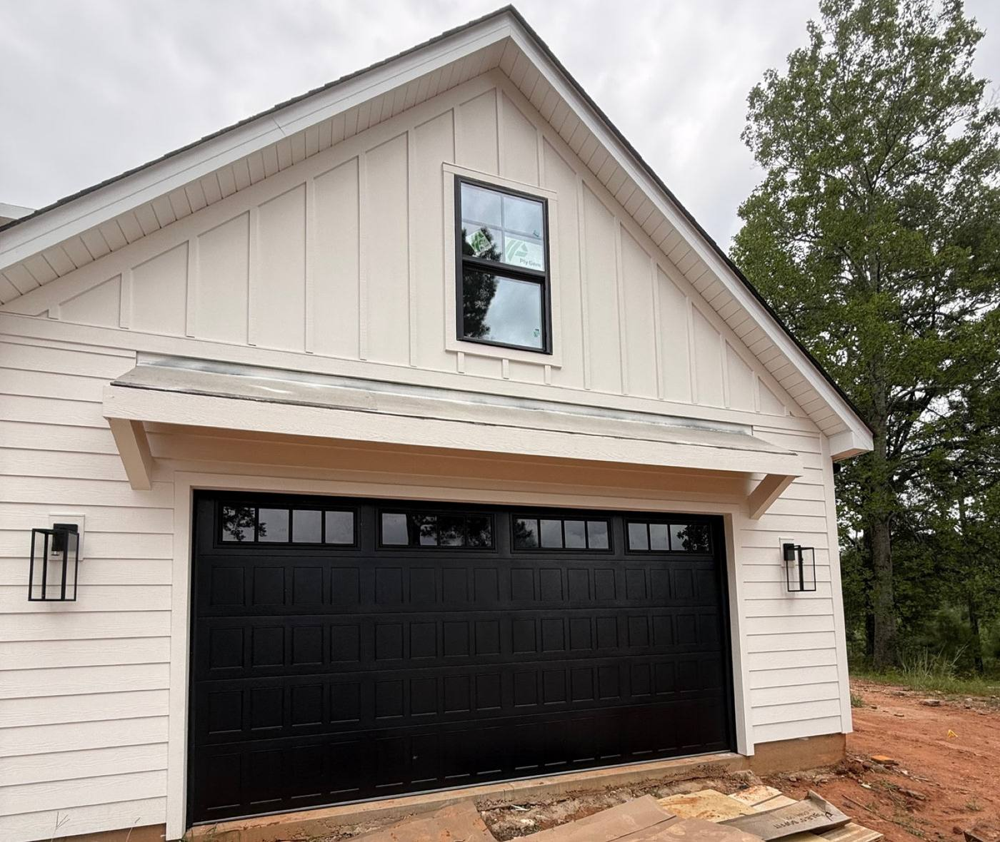
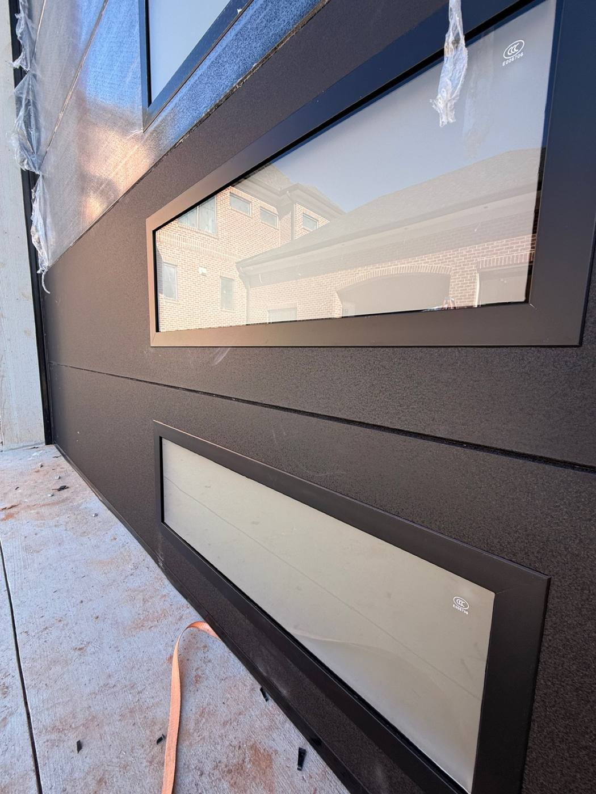
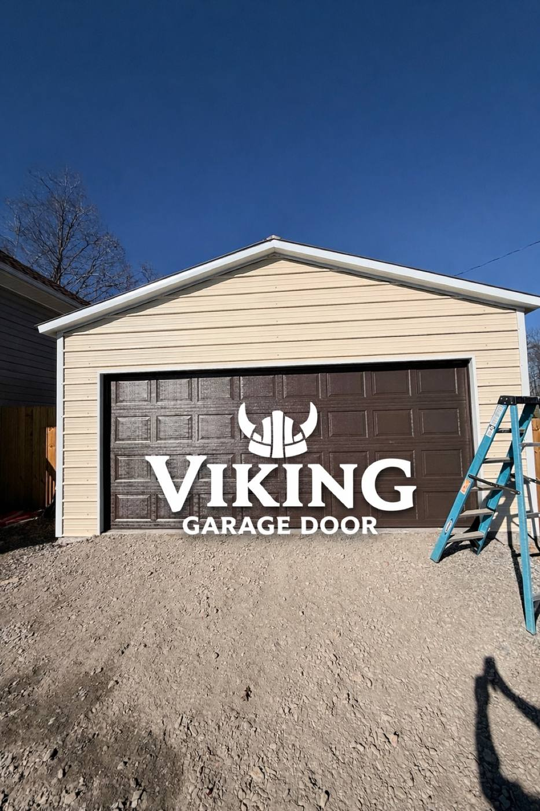
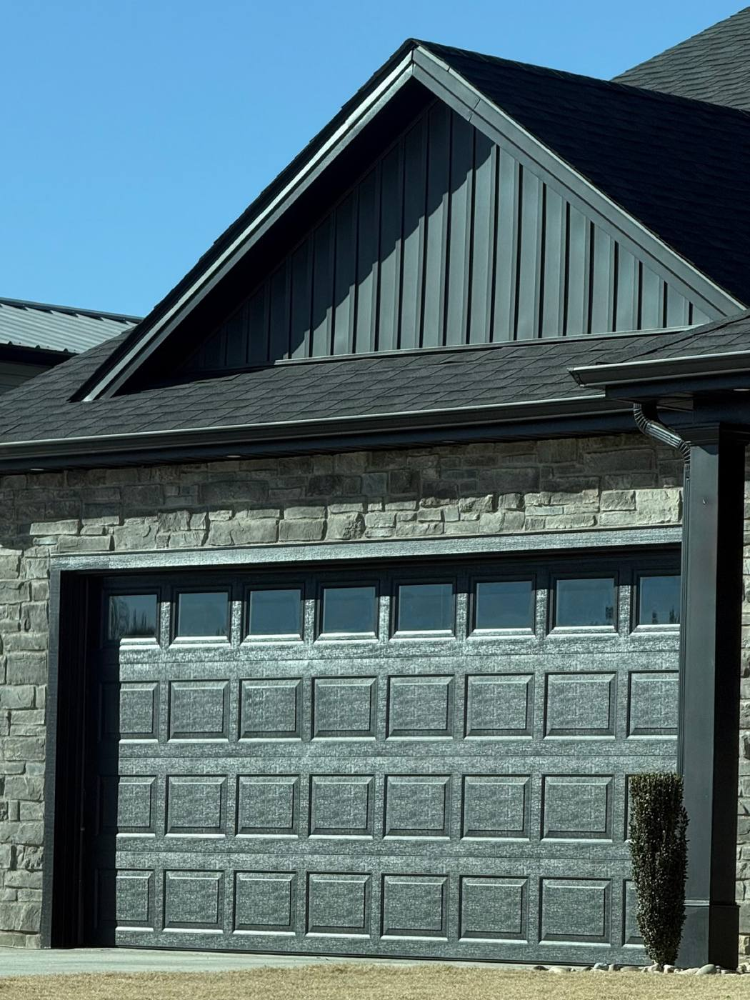

Home / Installation
Insulated steel doors, modern glass designs and custom looks — professionally installed from $1,950, with a free on-site estimate first.
New Doors
Whether your old door is beyond repair or you're upgrading curb appeal, we help you pick the right door, haul off the old one and install the new one — usually in a single day.

Energy-efficient R-9 to R-18 insulation — quieter operation and a warmer garage year-round.

Flush panels, full-view glass and black-frame styles that transform the front of your home.

Colors, windows, hardware — configured to match your home exactly.
Pricing
Installed prices including tear-out of the old door, new tracks and springs, balancing and haul-away:
Use our online configurator to build your door and see a ballpark price instantly, or call for a free on-site estimate.

We measure the opening, headroom and side room, look at your opener and talk through styles, colors, windows and insulation. You get a written price.
Your door is ordered from the manufacturer in your exact size and color, and we schedule installation as soon as it arrives.
Old door, track and springs out; new door, track and correctly sized springs in. Balanced, opener connected, safety-tested, debris hauled away.
Insulation: non-insulated single-layer steel is the budget option for detached garages; insulated doors (polystyrene or polyurethane, roughly R-6 to R-18) are quieter, stronger and cooler in a Carolina summer. Style: traditional raised panel, long panel, carriage-house with decorative hardware, or modern flush and full-view glass. Windows: a row of windows brightens the garage and dresses up the front of the house. Color: white and almond are classic; black, charcoal and woodgrain finishes are the most requested upgrades right now. Browse door styles and prices or photos of our installs.
We are an authorized Wayne Dalton dealer and install Garaga, Clopay and Amarr doors. Price yours in minutes with our online door builder. Building or managing several homes? See our builder & property manager program, or commercial garage doors for shops and businesses.
Single 8×7 insulated steel doors start at $1,950 installed, including tear-out, new tracks and springs, balancing and haul-away. Double doors are priced by size, insulation, windows and style.
Most single and double doors are installed in one day — usually 3 to 5 hours on site.
Yes. Tear-out and haul-away of the old door, track and springs are included in our installed prices.
If the garage is attached, has a room above it, or you use it as a workshop or gym, yes. Insulated doors are quieter, stiffer and noticeably cooler in summer.
Often, if it is in good shape and has working safety sensors. We will check it and tell you honestly.
Door still solid and just not working right? A repair is usually the cheaper answer — see Spartanburg garage door repair prices before you replace anything.
Call Viking Garage Door for a free estimate — or build your door online and text us the result.